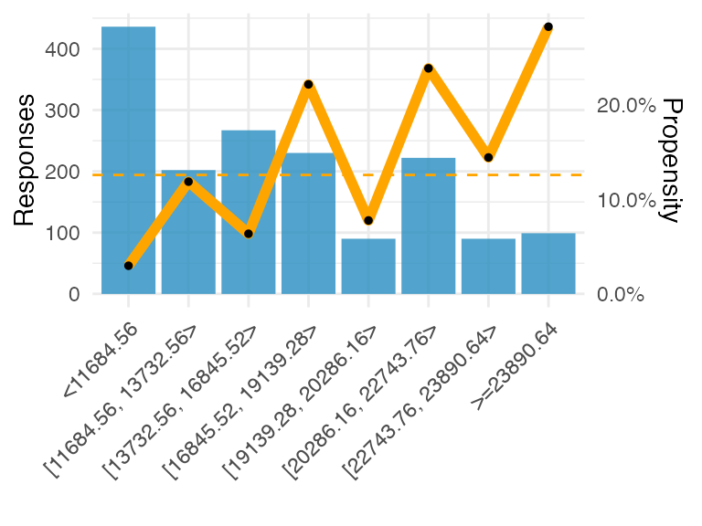
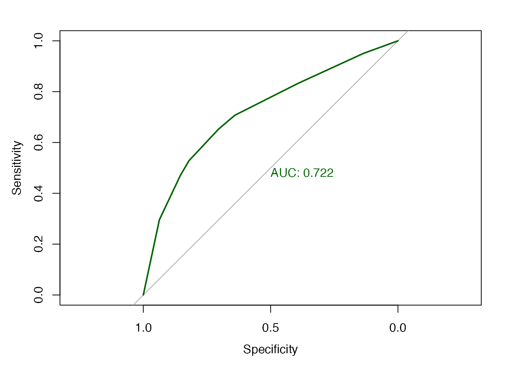
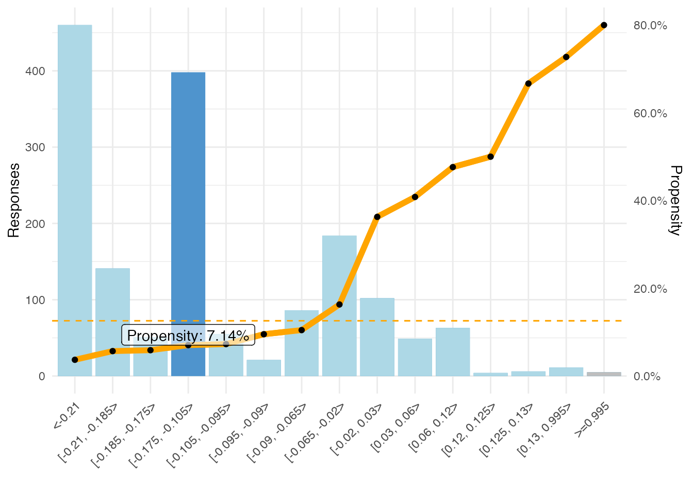

adm-explained.RmdThis notebook shows exactly how all the values in an ADM model report are calculated. It also shows how the propensity is calculated for a particular customer.
We use one of the shipped datamart exports for the example. This is a model very similar to one used in some of the ADM PowerPoint/Excel deep dive examples. You can change this notebook to apply to your own data.
example.Name <- "AutoNew84Months"
example.Channel <- "Web"
example.Predictor <- "Customer.NetWealth"For the example we use one particular model: AutoNew84Months over Web. You can use your own data and select a different model.
To explain the ADM model report, we use one of the active predictors as an example. Swap for any other predictor when using different data.
The selected model is shown below. Only the currently active predictors are used for the propensity calculation, so only showing those.
| Action | Sales/AutoLoans |
| Channel | Web |
| Name | AutoNew84Months |
| Active Predictors | Customer.AnnualIncome, Customer.NetWealth, Customer.WinScore, Customer.CreditScore, Customer.Age, IH.Web.Inbound.Accepted.pyHistoricalOutcomeCount, Customer.RelationshipStartDate, IH.SMS.Outbound.Accepted.pyHistoricalOutcomeCount, Customer.CLV_VALUE, Customer.MaritalStatus, Customer.BusinessSegment, IH.Email.Outbound.Accepted.pyHistoricalOutcomeCount, IH.Web.Inbound.Rejected.pyHistoricalOutcomeCount, IH.Email.Outbound.Rejected.pyHistoricalOutcomeCount, Customer.Date_of_Birth, IH.Email.Outbound.Accepted.pxLastGroupID, Param.ExtGroupCreditcards, IH.Web.Inbound.Loyal.pyHistoricalOutcomeCount, IH.SMS.Outbound.Rejected.pyHistoricalOutcomeCount, Customer.CLV, IH.SMS.Outbound.Accepted.pxLastGroupID, Customer.Gender, IH.Email.Outbound.Loyal.pxLastOutcomeTime.DaysSince, Customer.RiskCode, IH.Web.Inbound.Loyal.pxLastGroupID, IH.Web.Inbound.Accepted.pxLastGroupID, IH.Email.Outbound.Accepted.pxLastOutcomeTime.DaysSince, Customer.Prefix, IH.SMS.Outbound.Loyal.pxLastOutcomeTime.DaysSince, IH.SMS.Outbound.Churned.pxLastOutcomeTime.DaysSince, IH.Email.Outbound.Churned.pyHistoricalOutcomeCount, IH.Web.Inbound.Rejected.pxLastGroupID, Customer.pyCountry, Customer.NoOfDependents, IH.SMS.Outbound.Loyal.pyHistoricalOutcomeCount, IH.SMS.Outbound.Rejected.pxLastGroupID |
| Model Performance (AUC) | 77.4901 |
The Model Report in Prediction Studio for this model will have a predictor binning plot like below.
All numbers can be derived from just the number of positives and negatives in each bin that are stored in the ADM Data Mart. The next sections will show exactly how that is done.
| Name | Customer.NetWealth |
| Responses | 1636 |
| # Bins | 8 |
| Predictor Performance (AUC) | 72.2077 |

| Range/Symbols | Responses (%) | Positives | Positives (%) | Negatives | Negatives (%) | Propensity (%) | Z-Ratio | Lift |
|---|---|---|---|---|---|---|---|---|
| <11684.56 | 0.2665037 | 13 | 0.0631068 | 423 | 0.2958042 | 0.0298000 | -11.186877 | 0.236795 |
| [11684.56, 13732.56> | 0.1234719 | 24 | 0.1165049 | 178 | 0.1244755 | 0.1188000 | -0.332146 | 0.943574 |
| [13732.56, 16845.52> | 0.1632029 | 17 | 0.0825243 | 250 | 0.1748252 | 0.0637000 | -4.264671 | 0.505654 |
| [16845.52, 19139.28> | 0.1405868 | 51 | 0.2475728 | 179 | 0.1251748 | 0.2217000 | 3.908162 | 1.760996 |
| [19139.28, 20286.16> | 0.0550122 | 7 | 0.0339806 | 83 | 0.0580420 | 0.0778000 | -1.711775 | 0.617691 |
| [20286.16, 22743.76> | 0.1356968 | 53 | 0.2572816 | 169 | 0.1181818 | 0.2387000 | 4.397647 | 1.896003 |
| [22743.76, 23890.64> | 0.0550122 | 13 | 0.0631068 | 77 | 0.0538462 | 0.1444000 | 0.515565 | 1.147141 |
| >=23890.64 | 0.0605134 | 28 | 0.1359223 | 71 | 0.0496503 | 0.2828000 | 3.512888 | 2.246151 |
| Total | 1.0000000 | 206 | 1.0000000 | 1430 | 1.0000000 | 0.1259169 | 0.000000 | 1.000000 |
Internally, ADM only keeps track of the total counts of positive and negative responses in each bin. Everything else is derived from those numbers. The percentages and totals are trivially derived, and the propensity is just the number of positives divided by the total. The numbers calculated here match the numbers from the datamart table exactly.
binningDerived <- predictorbinning[, c("Range/Symbols","Positives","Negatives")] # copy over only the labels, pos and neg counts
binningDerived[, `Responses %` := (Positives+Negatives)/(sum(Positives)+sum(Negatives))]
binningDerived[, `Positives %` := Positives/sum(Positives)]
binningDerived[, `Negatives %` := Negatives/sum(Negatives)]
binningDerived[, Propensity := (Positives)/(Positives+Negatives)]| Range/Symbols | Positives | Negatives | Responses % | Positives % | Negatives % | Propensity |
|---|---|---|---|---|---|---|
| <11684.56 | 13 | 423 | 26.65 | 6.31 | 29.58 | 0.0298 |
| [11684.56, 13732.56> | 24 | 178 | 12.35 | 11.65 | 12.45 | 0.1188 |
| [13732.56, 16845.52> | 17 | 250 | 16.32 | 8.25 | 17.48 | 0.0637 |
| [16845.52, 19139.28> | 51 | 179 | 14.06 | 24.76 | 12.52 | 0.2217 |
| [19139.28, 20286.16> | 7 | 83 | 5.50 | 3.40 | 5.80 | 0.0778 |
| [20286.16, 22743.76> | 53 | 169 | 13.57 | 25.73 | 11.82 | 0.2387 |
| [22743.76, 23890.64> | 13 | 77 | 5.50 | 6.31 | 5.38 | 0.1444 |
| >=23890.64 | 28 | 71 | 6.05 | 13.59 | 4.97 | 0.2828 |
Lift is the ratio of the propensity in a particular bin over the average propensity. So a value of 1 is the average, larger than 1 means higher propensity, smaller means lower propensity:
binningDerived[, Lift := (Positives/(Positives+Negatives)) / (sum(Positives)/sum(Positives+Negatives))]| Range/Symbols | Positives | Negatives | Lift |
|---|---|---|---|
| <11684.56 | 13 | 423 | 0.2368 |
| [11684.56, 13732.56> | 24 | 178 | 0.9436 |
| [13732.56, 16845.52> | 17 | 250 | 0.5057 |
| [16845.52, 19139.28> | 51 | 179 | 1.7610 |
| [19139.28, 20286.16> | 7 | 83 | 0.6177 |
| [20286.16, 22743.76> | 53 | 169 | 1.8960 |
| [22743.76, 23890.64> | 13 | 77 | 1.1471 |
| >=23890.64 | 28 | 71 | 2.2462 |
The Z-Ratio is also a measure of the how the propensity in a bin differs from the average, but takes into account the size of the bin and thus is statistically more relevant. It represents the number of standard deviations from the average, so centers around 0. The wider the spread, the better the predictor is.
\[\frac{posFraction-negFraction}{\sqrt(\frac{posFraction*(1-posFraction)}{\sum positives}+\frac{negFraction*(1-negFraction)}{\sum negatives})}\]
See the calculation here, which is also included in pdstools::zratio.
binningDerived[, posFraction := Positives/sum(Positives)]
binningDerived[, negFraction := Negatives/sum(Negatives)]
binningDerived[, `Z-Ratio` := (posFraction-negFraction)/sqrt(posFraction*(1-posFraction)/sum(Positives) + negFraction*(1-negFraction)/sum(Negatives))]| Range/Symbols | Positives | Negatives | posFraction | negFraction | Z-Ratio |
|---|---|---|---|---|---|
| <11684.56 | 13 | 423 | 0.0631068 | 0.2958042 | -11.1868774 |
| [11684.56, 13732.56> | 24 | 178 | 0.1165049 | 0.1244755 | -0.3321464 |
| [13732.56, 16845.52> | 17 | 250 | 0.0825243 | 0.1748252 | -4.2646710 |
| [16845.52, 19139.28> | 51 | 179 | 0.2475728 | 0.1251748 | 3.9081618 |
| [19139.28, 20286.16> | 7 | 83 | 0.0339806 | 0.0580420 | -1.7117755 |
| [20286.16, 22743.76> | 53 | 169 | 0.2572816 | 0.1181818 | 4.3976470 |
| [22743.76, 23890.64> | 13 | 77 | 0.0631068 | 0.0538462 | 0.5155646 |
| >=23890.64 | 28 | 71 | 0.1359223 | 0.0496503 | 3.5128883 |
The predictor AUC is the univariate performance of this predictor against the outcome. This too can be derived from the positives and negatives, e.g. using the pROC package.
library(pROC)
response = unlist(sapply(1:nrow(predictorbinning),
function(r){return(c(rep(T, predictorbinning$Positives[r]),
rep(F, predictorbinning$Negatives[r])))}))
prediction = unlist(sapply(1:nrow(predictorbinning),
function(r){return(rep(predictorbinning$`Propensity (%)`[r],
predictorbinning$Positives[r] +
predictorbinning$Negatives[r]))}))
plot.roc(response, prediction, print.auc=T, col="darkgreen", levels=c(T,F), direction=">")
There is also a convenient function in pdstools to calculate
it directly from the positives and negatives: pdstools::auc_from_bincounts().
pdstools::auc_from_bincounts(predictorbinning$Positives, predictorbinning$Negatives)
#> [1] 0.7220772The basis for the Naive Bayes algorithm is Bayes’ Theorem:
\[p(C_k|x) = \frac{p(x|C_k)*p(C_k)}{p(x)}\]
with \(C_k\) the outcome and \(x\) the customer. Bayes’ theorem turns the question “what’s the probability to accept this action given a customer” around to “what’s the probability of this customer given an action”. With the independence assumption, and after applying a log odds transformation we get a log odds score that can be calculated efficiently and in a numerically stable manner:
\[log\ odds\ score = \sum_{p\ \in\ active\ predictors}log(p(x_p|Positive)) + log(p_{positive}) - \sum_plog(p(x_p|Negative)) - log(p_{negative})\] note that the prior can be written as:
\[log(p_{positive}) - log(p_{negative}) = log(\frac{TotalPositives}{Total})-log(\frac{TotalNegatives}{Total}) = log(TotalPositives) - log(TotalNegatives)\]
The contribution (conditional log odds) of an active predictor \(p\) for bin \(i\) with the number of positive and negative responses in \(Positives_i\) and \(Negatives_i\) is calculated as (note the “laplace smoothing” to avoid log 0 issues):
\[contribution_p = \log(Positives_i+\frac{1}{nBins}) - \log(Negatives_i+\frac{1}{nBins}) - \log(1+\sum_{i\ = 1..nBins}{Positives_i}) + \log(1+\sum_i{Negatives_i})\]
binningDerived[, posFraction := Positives/sum(Positives)]
binningDerived[, negFraction := Negatives/sum(Negatives)]
binningDerived[, `Log odds` := log(posFraction/negFraction)]
binningDerived[, `Modified Log odds` :=
(log(Positives+1/.N) - log(sum(Positives)+1)) -
(log(Negatives+1/.N) - log(sum(Negatives)+1))]| Range/Symbols | Positives | Negatives | posFraction | negFraction | Log odds | Modified Log odds |
|---|---|---|---|---|---|---|
| <11684.56 | 13 | 423 | 0.0631068 | 0.2958042 | -1.5448693 | -1.5397388 |
| [11684.56, 13732.56> | 24 | 178 | 0.1165049 | 0.1244755 | -0.0661762 | -0.0658269 |
| [13732.56, 16845.52> | 17 | 250 | 0.0825243 | 0.1748252 | -0.7506940 | -0.7480114 |
| [16845.52, 19139.28> | 51 | 179 | 0.2475728 | 0.1251748 | 0.6819934 | 0.6795997 |
| [19139.28, 20286.16> | 7 | 83 | 0.0339806 | 0.0580420 | -0.5353769 | -0.5233258 |
| [20286.16, 22743.76> | 53 | 169 | 0.2572816 | 0.1181818 | 0.7779468 | 0.7754195 |
| [22743.76, 23890.64> | 13 | 77 | 0.0631068 | 0.0538462 | 0.1586975 | 0.1625013 |
| >=23890.64 | 28 | 71 | 0.1359223 | 0.0496503 | 1.0070782 | 1.0056300 |
The final score is normalized by the number of active predictors, 1’s are added to avoid avoid numerical instability:
\[score = \frac{\log(1 + TotalPositives) – \log(1 + TotalNegatives) + \sum_p contribution_p}{1 + nActivePredictors}\]
Here, \(TotalPositives\) and \(TotalNegatives\) are the total number of positive and negative responses to the model.
Below an example. From all the active predictors of the model for we pick a value (in the middle for numerics, first symbol for symbolics) and show the (modified) log odds. The final score is calculated per the above formula, and this is the value that is mapped to a propensity value by the classifier (which is constructed using the PAV(A) algorithm).
| Name | Value | Bin | Positives | Negatives | Log odds |
|---|---|---|---|---|---|
| Customer.Age | 34 | 4 | 9 | 198 | -1.1459234 |
| Customer.AnnualIncome | -24043 | 1 | 74 | 1166 | -0.8196507 |
| Customer.BusinessSegment | middleSegmentPlus | 1 | 96 | 970 | -0.3764153 |
| Customer.CLV | NON-MISSING | 1 | 111 | 570 | 0.3009214 |
| Customer.CLV_VALUE | 1345 | 4 | 31 | 297 | -0.3227316 |
| Customer.CreditScore | 518 | 3 | 33 | 205 | 0.1105306 |
| Customer.Date_of_Birth | 18773 | 5 | 28 | 152 | 0.2446414 |
| Customer.Gender | U | 1 | 52 | 481 | -0.2855165 |
| Customer.MaritalStatus | No Resp+ | 1 | 67 | 745 | -0.4707662 |
| Customer.NetWealth | 17992 | 4 | 51 | 179 | 0.6795997 |
| Customer.NoOfDependents | 0 | 1 | 111 | 850 | -0.0996897 |
| Customer.Prefix | Mrs. | 1 | 64 | 552 | -0.2166638 |
| Customer.pyCountry | USA | 1 | 99 | 776 | -0.1226908 |
| Customer.RelationshipStartDate | 1426 | 4 | 16 | 117 | -0.0502040 |
| Customer.RiskCode | R4 | 1 | 36 | 329 | -0.2709248 |
| Customer.WinScore | 66 | 4 | 39 | 102 | 0.9737550 |
| IH.Email.Outbound.Accepted.pxLastGroupID | HomeLoans | 3 | 25 | 218 | -0.2271663 |
| IH.Email.Outbound.Accepted.pxLastOutcomeTime.DaysSince | -55 | 2 | 145 | 881 | 0.1305250 |
| IH.Email.Outbound.Accepted.pyHistoricalOutcomeCount | 1 | 2 | 30 | 351 | -0.5201040 |
| IH.Email.Outbound.Churned.pyHistoricalOutcomeCount | NA | 1 | 143 | 898 | 0.1014857 |
| IH.Email.Outbound.Loyal.pxLastOutcomeTime.DaysSince | NA | 1 | 129 | 1071 | -0.1788128 |
| IH.Email.Outbound.Rejected.pyHistoricalOutcomeCount | 83 | 3 | 24 | 218 | -0.2677516 |
| IH.SMS.Outbound.Accepted.pxLastGroupID | Account | 4 | 45 | 316 | -0.0132913 |
| IH.SMS.Outbound.Accepted.pyHistoricalOutcomeCount | 9 | 4 | 6 | 96 | -0.8219863 |
| IH.SMS.Outbound.Churned.pxLastOutcomeTime.DaysSince | -20 | 2 | 9 | 27 | 0.8492426 |
| IH.SMS.Outbound.Loyal.pxLastOutcomeTime.DaysSince | NA | 1 | 165 | 1240 | -0.0797184 |
| IH.SMS.Outbound.Loyal.pyHistoricalOutcomeCount | NA | 1 | 165 | 1240 | -0.0797184 |
| IH.SMS.Outbound.Rejected.pxLastGroupID | Account | 2 | 47 | 357 | -0.0904920 |
| IH.SMS.Outbound.Rejected.pyHistoricalOutcomeCount | 102 | 4 | 12 | 117 | -0.3355899 |
| IH.Web.Inbound.Accepted.pxLastGroupID | DepositAccounts | 3 | 53 | 397 | -0.0779024 |
| IH.Web.Inbound.Accepted.pyHistoricalOutcomeCount | 11 | 5 | 25 | 164 | 0.0558018 |
| IH.Web.Inbound.Loyal.pxLastGroupID | MISSING | 1 | 100 | 857 | -0.2119188 |
| IH.Web.Inbound.Loyal.pyHistoricalOutcomeCount | 4 | 3 | 30 | 212 | -0.0172246 |
| IH.Web.Inbound.Rejected.pxLastGroupID | Account | 2 | 81 | 546 | 0.0278641 |
| IH.Web.Inbound.Rejected.pyHistoricalOutcomeCount | 111 | 4 | 35 | 306 | -0.2316704 |
| Param.ExtGroupCreditcards | NON-MISSING | 1 | 136 | 721 | 0.2684022 |
| Final Score | NA | NA | NA | -0.1493288 |
The success rate is defined as \(\frac{positives}{positives+negatives}\) per bin.
The adjusted propensity that is returned is a small modification (Laplace smoothing) to this and calculated as \(\frac{0.5+positives}{1+positives+negatives}\) so empty models return a propensity of 0.5.
Bins that are not reachable given the current predictor binning are greyed out.
| Index | Bin | Positives | Negatives | Cum. Total (%) | Propensity (%) | Adjusted Propensity (%) | Cum. Positives (%) | Z-Ratio | Lift (%) |
|---|---|---|---|---|---|---|---|---|---|
| 1 | <-0.21 | 17 | 443 | 100.0000000 | 3.695652 | 3.796095 | 100.000000 | -9.994483 | 29.3499 |
| 2 | [-0.21, -0.185> | 8 | 133 | 71.8826406 | 5.673759 | 5.985915 | 91.747573 | -3.495416 | 45.0596 |
| 3 | [-0.185, -0.175> | 3 | 48 | 63.2640587 | 5.882353 | 6.730769 | 87.864078 | -1.977473 | 46.7162 |
| 4 | [-0.175, -0.105> | 28 | 370 | 60.1466993 | 7.035176 | 7.142857 | 86.407767 | -4.628074 | 55.8716 |
| 5 | [-0.105, -0.095> | 4 | 51 | 35.8190709 | 7.272727 | 8.035714 | 72.815534 | -1.505372 | 57.7582 |
| 6 | [-0.095, -0.09> | 2 | 19 | 32.4572127 | 9.523810 | 11.363636 | 70.873786 | -0.478811 | 75.6357 |
| 7 | [-0.09, -0.065> | 9 | 77 | 31.1735941 | 10.465116 | 10.919540 | 69.902913 | -0.657755 | 83.1113 |
| 8 | [-0.065, -0.02> | 30 | 154 | 25.9168704 | 16.304348 | 16.486487 | 65.533981 | 1.464399 | 129.4850 |
| 9 | [-0.02, 0.03> | 37 | 65 | 14.6699267 | 36.274510 | 36.407767 | 50.970874 | 4.913029 | 288.0830 |
| 10 | [0.03, 0.06> | 20 | 29 | 8.4352078 | 40.816327 | 41.000000 | 33.009709 | 3.664015 | 324.1530 |
| 11 | [0.06, 0.12> | 30 | 33 | 5.4400978 | 47.619048 | 47.656250 | 23.300971 | 4.922851 | 378.1785 |
| 12 | [0.12, 0.125> | 2 | 2 | 1.5892421 | 50.000000 | 50.000000 | 8.737864 | 1.203876 | 397.0874 |
| 13 | [0.125, 0.13> | 4 | 2 | 1.3447433 | 66.666667 | 64.285714 | 7.766990 | 1.864405 | 529.4498 |
| 14 | [0.13, 0.995> | 8 | 3 | 0.9779951 | 72.727273 | 70.833333 | 5.825243 | 2.718192 | 577.5816 |
| 15 | >=0.995 | 4 | 1 | 0.3056235 | 80.000000 | 75.000000 | 1.941748 | 1.941841 | 635.3398 |
Below the classifier mapping. On the x-axis the binned scores (log odds values), on the y-axis the Propensity. Note the returned propensities are following a slightly adjusted formula, see the table above. The bin that contains the calculated score is highlighted.
The score -0.1493288 falls in bin 4 of the classifier, so for this customer, the model returns a propensity of 7.14%.
